<!DOCTYPE html>
<html lang="en">
  <head>
    <meta charset="utf-8" />
    <meta name="viewport" content="width=device-width, initial-scale=1.0, maximum-scale=1.0, user-scalable=no" />

    <title>reveal-md</title>
    <link rel="shortcut icon" href="./favicon.ico" />
    <link rel="stylesheet" href="./dist/reset.css" />
    <link rel="stylesheet" href="./dist/reveal.css" />
    <link rel="stylesheet" href="/_assets/theme/puzzle.css" id="theme" />
    <link rel="stylesheet" href="./css/highlight/zenburn.css" />


  </head>
  <body>
    <div class="reveal">
      <div class="slides"><section  data-markdown><script type="text/template"><style>
.reveal section img { background:none; border:none; box-shadow:none; }


#left {
    margin: 10px 0 15px 20px;
    text-align: center;
    float: left;
    z-index:-10;
    width:48%;
    font-size: 0.85em;
    line-height: 1.5;
}
#right {
    margin: 10px 0 15px 0;
    float: right;
    text-align: center;
    z-index:-10;
    width:48%;
    font-size: 0.85em;
    line-height: 1.5;
}

</style>


# Clase 3: Falla por fatiga debida a cargas variables


<font size=6> **Profesor:** Ing. Israel Chaves Arbaiza </font>

<font size=6> **Curso**: Diseño de Elementos de Máquinas I </font>


</script></section><section  data-markdown><script type="text/template">
## Agenda


<font size=6>

* Introducción a la fatiga en metales
* Enfoque de la falla por fatiga en el análisis y el diseño
* Método de fatiga-vida
* Método del esfuerzo-vida
* Método de deformación-vida
* Método mecánico de la fractura lineal-elástica
* Resistencia a la fatiga
* Concentración del esfuerzo y sensibilidad a la muesca
* Criterios de falla por fatiga ante esfuerzos variables
* Resistencia a la fatiga por torsión bajo esfuerzos fluctuantes
* Combinaciones de modos de carga
* Esfuerzos variables y fluctuantes, daño por fatiga acumulada
* Resistencias a la fatiga superficial

</font>
</script></section><section ><section data-markdown><script type="text/template">## Introducción a la fatiga en metales


<font size=6>

* Cuando los esfuerzos varían ó fluctúan
* Cargas repetidas ó alternantes
* La falla ocurre luego de muchos ciclos
* La falla se produce como fractura frágil
* No hay avisos de la falla

</font>
</script></section><section data-markdown><script type="text/template">
## Introducción a la fatiga en metales

<iframe width="900" height="600" src="https://www.youtube.com/embed/ywDsB3umK2Y?start=57" title="YouTube video player" frameborder="0" allow="accelerometer; autoplay; clipboard-write; encrypted-media; gyroscope; picture-in-picture" allowfullscreen></iframe>
</script></section><section data-markdown><script type="text/template">
## Etapas de las fallas por fatiga

<div id="left">

<font size=6>

<p style='text-align: justify;'>

**Etapa 1:** Microgrietas, debido a la deformación plástica cíclica

**Etapa 2:** Las microgrietas se convierten en macro. Y se forman mesetas paralelas, separadas por crestas longitudinales.

**Etapa 3:** Ocurre en el ciclo de esfuerzo final, cuando la pieza ya no resiste cargas y falla.

</p>
</font>

</div>

<div id="right">

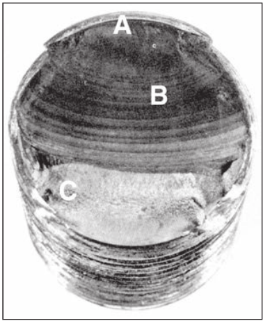

</div>
</script></section><section data-markdown><script type="text/template">
## Esquemas de fractura por fatiga en superficies


</script></section><section data-markdown><script type="text/template">
## Esquemas de fractura por fatiga en superficies


</script></section><section data-markdown><script type="text/template">
## Esquemas de fractura por fatiga en superficies


</script></section><section data-markdown><script type="text/template">
## Esquemas de fractura por fatiga en superficies


</script></section><section data-markdown><script type="text/template">
## Fatiga

<font size=6>

* Es una falla que se debe a la formación y propagación de grietas
* Inicia en una discontinuidad del material, con un esfuerzo cíclico máximo.
* Las discontinuidades se producen debido a:
  1. Diseño de cambios rápidos en la sección transversal, cuñeros, orificios, etc.
  2. Elementos giratorios ó deslizantes entre sí (cojinetes, engranes, levas, etc.)
  3. Descuido en los estampados, marcas de herramienta, raspaduras, rebabas, etc. Ensamble inapropiado y errores de fabricación.
  4. Composición del material luego de un forjado, fundido, laminado, etc.

</font>
</script></section><section data-markdown><script type="text/template">## Ejemplos de fractura por fatiga

<div id="right">

<font size=6>

<p style='text-align: justify;'>

* Eje de transmisión de AISI 4320
* Falla inició en B, en el extremo del cuñero
* Progresó hasta C, donde ocurre la ruptura final
* Dado que la zona de ruptura es pequeña, se sabe que las cargas fueron bajas

</p>
</font>

</div>

<div id="left">

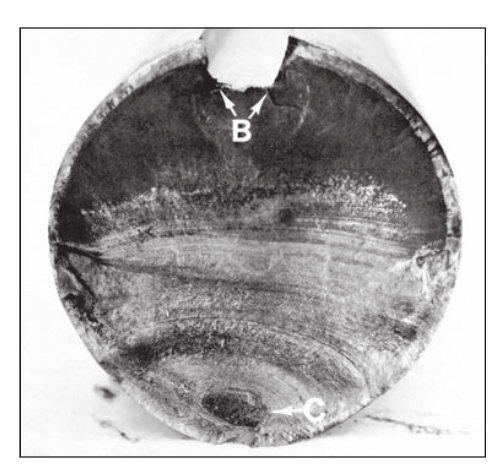

</div>
</script></section><section data-markdown><script type="text/template">## Ejemplos de fractura por fatiga

<div id="right">

<font size=6>

<p style='text-align: justify;'>

* Falla por fatiga en una biela de acero AISI8640
* Origen a la izquierda, en la línea instantánea del forjado
* La grieta avanzó (nótesen las marcas de playa) hasta generar la fractura rápida final

</p>
</font>

</div>

<div id="left">

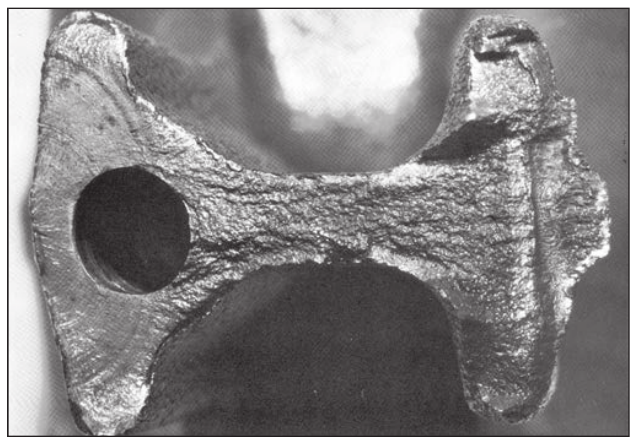

</div>
</script></section><section data-markdown><script type="text/template">
## Ejemplos de fractura por fatiga


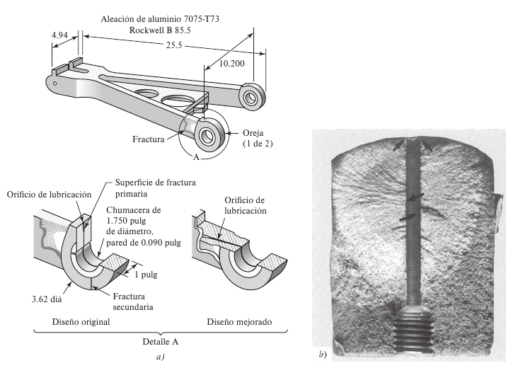

<font size=5>

* Brazo de torsión de un tren de aterrizaje de aleación de aluminio 7075-T73
* Se rediseña para eliminar la fractura por fatiga de un orificio de lubricación

</font>
</script></section></section><section ><section data-markdown><script type="text/template">
## Enfoque de la falla por fatiga


<font size=6>

* Para analizar un diseño por falla debido a fatiga, hay muchos factores a considerar
* La ciencia aún no puede explicar ni predecir por completo el mecanismo de fatiga
* El profesional en ingeniería utiliza la ciencia hasta donde le sea posible, pero debe plantear una solución al problema

</font>
</script></section><section data-markdown><script type="text/template">
## Resistencia a la fatiga y límite de resistencia a la fatiga

<font size=6>

* El diagrama de *resistencia-vida* proporciona la resistencia a la fatiga $  S_f $ contra el ciclo de vida *N* de un material
* Para hierro y acero, el diagrama *S-N* se ve horizontal en cierto punto
* En ese punto, la resistencia se llama *límite de resistencia a la fatiga* $ S'_e $, y ocurre entre los $ 10^6 $ y los $ 10^7 $ ciclos
* La prima en $ S'_e $, se refiere al límite de resistencia a la fatiga en la **pieza de laboratorio controlada**
* En los materiales no ferrosos, sin límite de resistencia a la fatiga, se puede proporcionar una resistencia a la faitga, a un número específico de ciclos, se denomina $ S'_f $

</font>
</script></section><section data-markdown><script type="text/template">## Factores que modifican el límite de la resistencia a la fatiga

<font size=6>

* Estos factores se definen y se usan para considerar **las diferencias** entre la pieza de prueba y la parte real, en cuanto a carga, tamaño, temperatura, confiabilidad, y otros
* En este caso, la carga se considera simple e invertida
* Concentración del esfuerzo y sensibilidad a la muesca
* Combinaciones de modos de cargas
* Esfuerzos fluctuantes ó variables
* Casos especiales de resistencia a la fatiga superficial

</font>


<!-- ## Math cases

This math is inline  $ \sum_{\forall i}{x_i^{2}} $

This is on a separate line

$$
a^2+b^2=c^2
$$ -->


</script></section></section><section ><section data-markdown><script type="text/template">
## Métodos de fatiga-vida

<font size=6>

Son 3 métodos que intentan predecir cuántos ciclos (*N*) trabaja una pieza, antes de fallar, para un nivel de carga específico.

* $$ 1 \leq N \leq 10^{3} \Rightarrow \textbf{bajo ciclaje}$$

* $$ N \geq 10^{3} \Rightarrow \textbf{alto ciclaje}$$

</font>
</script></section><section data-markdown><script type="text/template">
## Métodos de fatiga-vida

<font size=5>

|  Esfuerzo-vida |  Deformación-vida   |  Mecánica de la fractura   |
|---|---|---|
|  Menos exacto  |  Analiza la deformación plástica  |  Supone que existe una grieta   |
| Alto ciclaje  &#x1F44D; | Alto ciclaje &#x1F44E;   |  Predice el crecimiento de una grieta |   
| &#x1F44E; Bajo ciclaje  |  Bajo ciclaje &#x1F44D; | En conjunto con software  |

</font>
</script></section></section><section ><section data-markdown><script type="text/template">
## Método del esfuerzo-vida

<font size=5>

* Las muestras se someten a fuerzas específicas, variables ó repetidas, y se cuentan los ciclos hasta que se destruyen.
* Se requiere un gran número de ensayos
* Comúnmente, se somete una probeta a flexión pura en la máquina de Moore
* Al rotar la probeta, se somete a esfuerzos fluctuantes que oscilan en magnitudes iguales de tensión y compresión. Se le conoce como **ciclo de esfuerzos completamente invertidos**

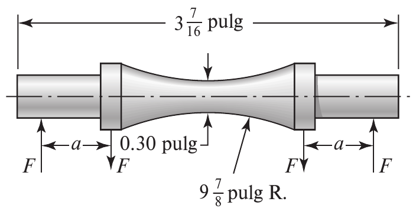

</font>
</script></section><section data-markdown><script type="text/template">
## Método del esfuerzo-vida

<font size=5>

* Conforme se van haciendo más ensayos, cada vez se disminuye el esfuerzo, hasta graficar un diagrama *S-N*, en escala semilogarítmica
* En aceros, cerca de los $ 10^6 $ ciclos, la resistencia a la fatiga se mantiene constante en un valor $ S_e $, llamado **límite de resistencia**


</font>

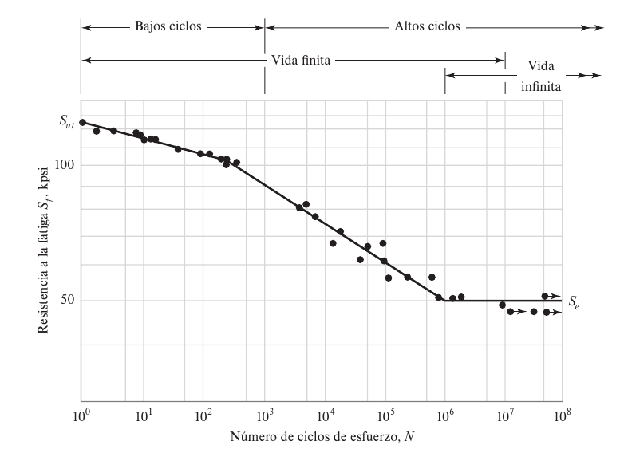
</script></section><section data-markdown><script type="text/template">
## Método del esfuerzo-vida

<font size=5>

* Cuando los niveles de esfuerzo son menores a $S_e$, se predice que la pieza tendrá **vida infinita**
* Pero si los esfuerzos están entre $10^3$ y $10^6$, es vida finita
* En *bajo ciclaje*, se considera un problema cuasiestático, ocurre fluencia antes que fatiga


</font>


</script></section><section data-markdown><script type="text/template">
## Diagrama S-N para materiales no ferrosos

<font size=5>

* No tienen límite de resistencia
* $S_f$ se indica a **un número específico de ciclos**
* En el aluminio, típicamente ese número de ciclos es de **N=5 ($10^8$)**


</font>

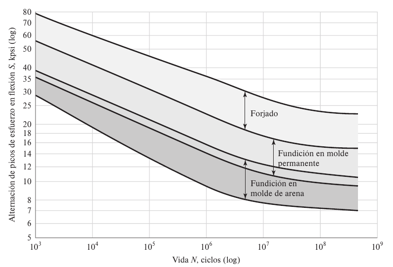


</script></section></section><section ><section data-markdown><script type="text/template">## Método de deformación-vida

<div id="right">

<font size=6>

<p style='text-align: justify;'>

* Es el mejor y más detallado método existente
* Requiere varias idealizaciones $ \Longleftrightarrow $ más incertidumbre
* La falla por fatiga siempre inicia en una discontinuidad
* La deformación cíclica **puede cambiar el límite elástico**, propiciando la fatiga

</p>
</font>

</div>

<div id="left">

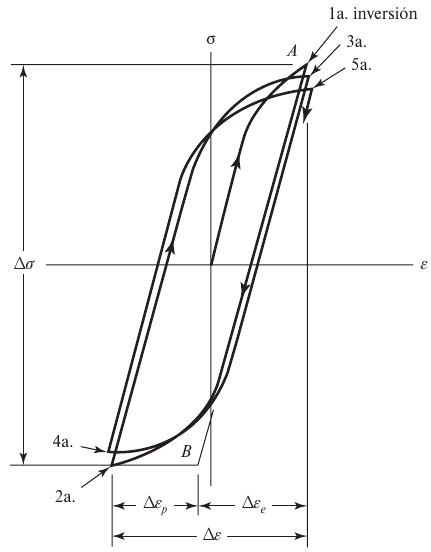
Figura 6.12

</div>

</script></section><section data-markdown><script type="text/template">
### Relaciones de vida a la fatiga con la Deformación

<font size=5>

* La gráfica muestra la relación entre la vida a la fatiga, y la amplitud de la deformación total. Se explica con los siguientes términos:
* *Coeficiente de ductilidad a la fatiga* $\varepsilon'_F$: deformación real correspondiente a la fractura en una inversión (punto A en fig.6-12)
* *Coeficiente de resistencia a la fatiga* $\sigma'_F$: esfuerzo real correspondiente a la fractura en una inversión (punto A en fig.6-12)


</font>

<p style='text-align: justify;'>
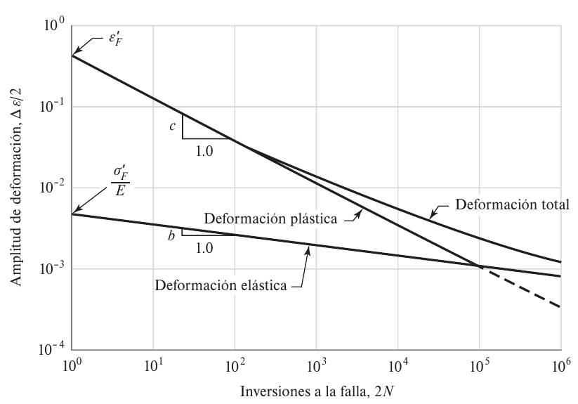

<font size=5>
Figura 6.13
</font>
</p>

</script></section><section data-markdown><script type="text/template">
### Relaciones de vida a la fatiga con la Deformación

<font size=5>

* *Exponente de ductilidad a la fatiga* $c$: es la pendiente de la línea de la **deformación plástica**, y la potencia a la que se debe elevar la vida *2N*, para que sea proporcional a la amplitud real de la deformación plástica.
* *Exponente de la resistencia a la fatiga* $b$: pendiente de la recta de la **deformación elástica**, y es la potencia a la cual se debe elevar la vida *2N* para que sea proporcional a la amplitud del esfuerzo real.


</font>

<p style='text-align: justify;'>


<font size=5>
Figura 6.13
</font>
</p>

</script></section><section data-markdown><script type="text/template">
### Relaciones de vida a la fatiga con la deformación

<font size=5>

* La deformación total es la suma de las deformaciones elásticas y plásticas
* La amplitud de la deformación total es:
  $$
  \frac{\Delta \varepsilon}{2} = \frac{\Delta \varepsilon_e}{2} + \frac{\Delta \varepsilon_p}{2} \quad [a]
  $$


</font>

<div id="left">

<font size=5>
* La ecuación de la línea de la deformación plástica es:
$$
\frac{\Delta \varepsilon_p}{2} = \varepsilon'_{F} (2N)^{c} \quad [6.1]
$$
</font>

</div>

<div id="right">

<font size=5>
* La ecuación de la línea de la deformación elástica es:
$$
\frac{\Delta \varepsilon_e}{2} =  \frac{\sigma'_{F}}{E}   (2N)^{b} \quad [6.2]
$$
</font>


</div>


<font size=6>

<div class="math">
\begin{equation}
  \frac{\Delta \varepsilon}{2} = \frac{\sigma'_F}{E}(2N)^{b} + \varepsilon'_{F} (2N)^{c} \quad [6.3]
\end{equation}
</div>
</font>

</script></section><section data-markdown><script type="text/template">
### Relaciones de vida a la fatiga con la deformación

<font size=6>

<div class="math">
\begin{equation}
  \frac{\Delta \varepsilon}{2} = \frac{\sigma'_F}{E}(2N)^{b} + \varepsilon'_{F} (2N)^{c} \quad [6.3]
\end{equation}
</div>
</font>


<font size=6>

* Se le conoce como **relación Manson-Conffin**, entre la deformación y la vida a la fatiga
* Sin embargo, esta ecuación se usa poco en el diseño, ya que la literatura técnica, no presenta tablas ni gráficas de factores de concentración de deformación.

</font>
</script></section><section data-markdown><script type="text/template">
### Relaciones de vida a la fatiga con la deformación

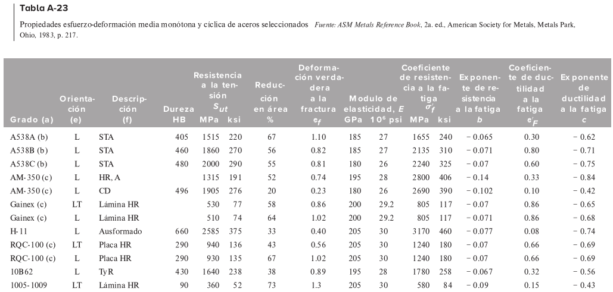
</script></section></section><section ><section data-markdown><script type="text/template">
## Método mecánico de la fractura lineal-estática

<font size=6>

* Como la primera etapa de agrietamiento, es invisible para el observador, se dice que involucra varios granos.
* En la etappa II, se extiende la grieta, de forma ordenada, se puede ver con un microscopio.
* La fractura final, ocurre en la etapa III.
* Cuando la grieta es lo suficientemente grande, si $K_{I}=K_{ic}$, para la amplitud del esfuerzo involucrado, entonces $K_{ic}$ es la intensidad del esfuerzo crítico del metal sin daño, y existe una falla catastrófica.
* La etappa III implica una rápida aceleración del crecimiento de la grieta y después de la fractura.


</font>


</script></section><section data-markdown><script type="text/template">
## Crecimiento de la grieta

<font size=6>

* El factor de intensidad del esfuerzo está dado por:
$$ K_{I}=\beta \sigma \sqrt{\pi a} $$
* El intervalo de intensidad del esfuerzo por ciclo es:
$$ \Delta K_{I}=\beta (\sigma_{max} - \sigma_{min} ) \sqrt{\pi a} = \beta \Delta \sigma \sqrt{\pi a}$$
* Los elementos de prueba a varios niveles de $ \Delta \sigma$ proporcionan gráficas de longitud de grietas VS ciclos de esfuerzo

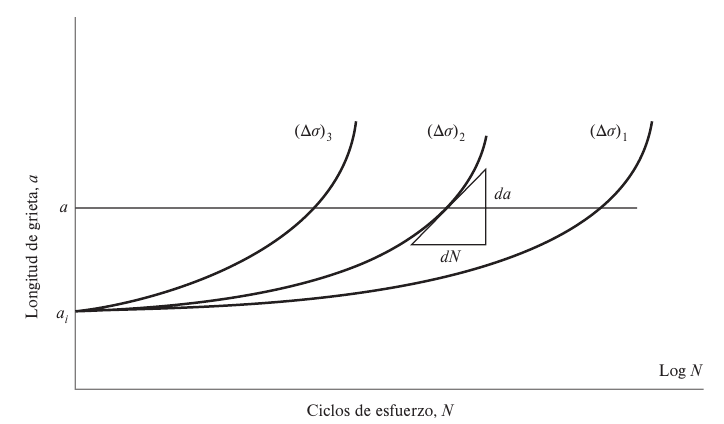

</font>
</script></section><section data-markdown><script type="text/template">
## Crecimiento de la grieta

<div id="left">

<font size=5>

* Se grafica la razón de crecimiento de la grieta en 3 etapas
* Se puede generar una gráfica distinta, cambiando la relación de esfuerzo
* $ R = \sigma_{min} / \sigma_{max} $
* Para estimar la vida restante de una pieza, sometida a esfuerzo cíclico, **luego de descubrir una grieta**:
* Se supone que la deformación plana se conserva
* Se supone que la grieta se descubrió en la etapa II

</font>

</div>

<div id="right">

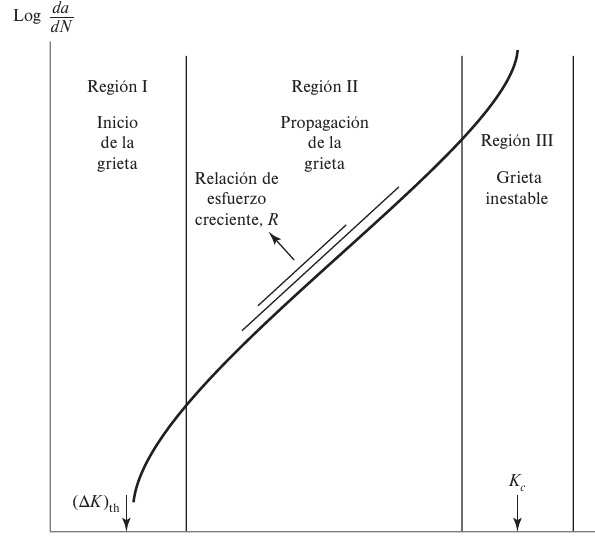


</div>

</script></section><section data-markdown><script type="text/template">
## Crecimiento de la grieta

<font size=5>

* En la Región II, el crecimiento se aproxima a partir de:
$$
\frac{da}{dN}= C (\Delta K_{I})^m
$$
*   *C* y *m* son constantes empíricas del material, se toman de la tabla 6-1:
</font>

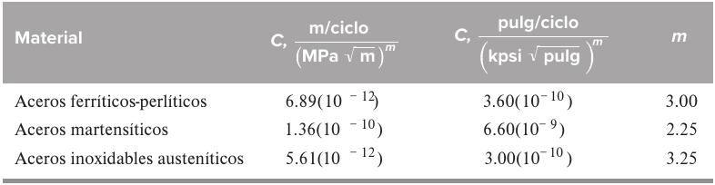
</script></section><section data-markdown><script type="text/template">
## Crecimiento de la grieta

<font size=5>

* Para calcular la vida estimada de la pieza, luego de descubrir la grieta, se utiliza la ecuación 6-6:
$$
\int_{0}^{N_f} dN = N_{f} = \frac{1}{C} \int_{a_i}^{a_f} \frac{da}{(\beta \Delta \sigma \sqrt{\pi a})^{m}}
$$
* $ a_i $ es la longitud inicial de la grieta
* $ a_f $ es la longitud final de la grieta (al fallar)
* $ N_f $ son los ciclos estimados, para fallar, luego de encontrar la grieta
* Si $ \beta $ varía, se sugiere utilizar la ecuación 6-7

</font>
</script></section><section data-markdown><script type="text/template">
## Crecimiento de la grieta: Ejemplo 6-1


</script></section><section data-markdown><script type="text/template">
## Crecimiento de la grieta: Ejemplo 6-1


</script></section><section data-markdown><script type="text/template">
## Crecimiento de la grieta: Ejemplo 6-1


</script></section></section><section ><section data-markdown><script type="text/template">
## Límite de resistencia a la fatiga

<font size=5>

* Para diseñar prototipos, se requiere un método para estimar el límite de resistencia a la fatiga
* Para aceros, se ha encontrado que se relacionado con la resistencia última

</font>

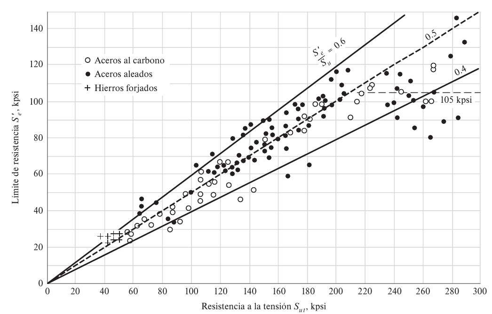

</script></section><section data-markdown><script type="text/template">
## Límite de resistencia a la fatiga
<font size=5>

* Se debe realizar una compensación utilizando diversos factores
* Para los aceros:
$$
S_{e}' =
\begin{cases}
  0.5S_{ut} & \quad S_{ut} \leq 200 \text{ kpsi (1400 MPa)}  \newline
  100 \text{ kpsi} & \quad S_{ut} > 200 \text{ kpsi}  \newline
  700 \text{ MPa} & \quad S_{ut} > 1400 \text{ MPa}
\end{cases}
$$
* Las microestructuras más dúctiles tienen una relación más alta 


<!-- \begin{array}{rl}
-x & \text{if } x < 0,\\
0 & \text{if } x = 0,\\
x & \text{if } x > 0.
\end{array} \right. -->


</font></script></section></section><section  data-markdown><script type="text/template">
## Concentración del esfuerzo y sensibilidad a la muesca

</script></section><section  data-markdown><script type="text/template">
## Criterios de falla por fatiga ante esfuerzos variables

</script></section><section  data-markdown><script type="text/template">
## Resistencia a la fatiga por torsión bajo esfuerzos fluctuantes


</script></section><section  data-markdown><script type="text/template">
## Combinaciones de modos de carga


</script></section><section  data-markdown><script type="text/template">
## Esfuerzos variables y fluctuantes, daño por fatiga acumulada


</script></section><section  data-markdown><script type="text/template">
## Resistencias a la fatiga superficial
</script></section></div>
    </div>

    <script src="./dist/reveal.js"></script>

    <script src="./plugin/markdown/markdown.js"></script>
    <script src="./plugin/highlight/highlight.js"></script>
    <script src="./plugin/zoom/zoom.js"></script>
    <script src="./plugin/notes/notes.js"></script>
    <script src="./plugin/math/math.js"></script>
    <script>
      function extend() {
        var target = {};
        for (var i = 0; i < arguments.length; i++) {
          var source = arguments[i];
          for (var key in source) {
            if (source.hasOwnProperty(key)) {
              target[key] = source[key];
            }
          }
        }
        return target;
      }

      // default options to init reveal.js
      var defaultOptions = {
        controls: true,
        progress: true,
        history: true,
        center: true,
        transition: 'default', // none/fade/slide/convex/concave/zoom
        plugins: [
          RevealMarkdown,
          RevealHighlight,
          RevealZoom,
          RevealNotes,
          RevealMath
        ]
      };

      // options from URL query string
      var queryOptions = Reveal().getQueryHash() || {};

      var options = extend(defaultOptions, {"controls":true,"progress":true,"history":true,"center":true,"slideNumber":true}, queryOptions);
    </script>


    <script>
      Reveal.initialize(options);
    </script>
  </body>
</html>
